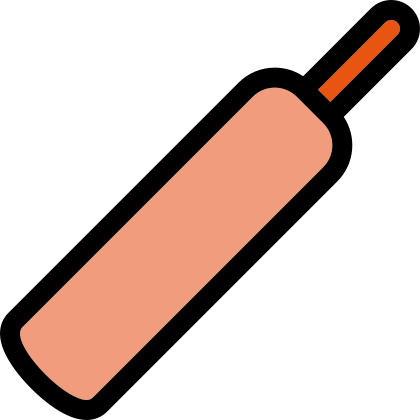
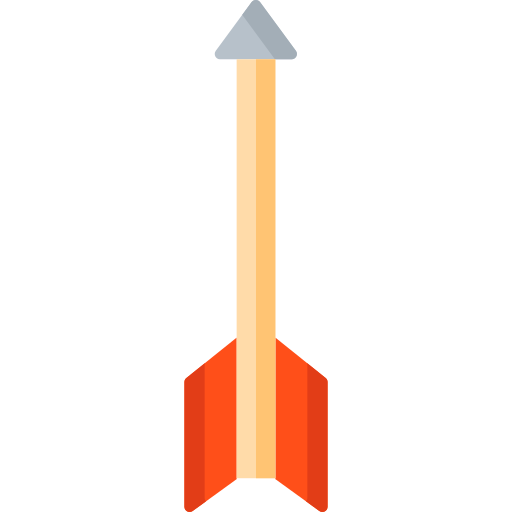
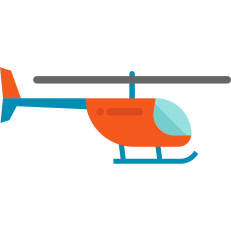

<!DOCTYPE html>

<meta name="robots" content="noindex">
<html>
<head>
  <script src="https://d3js.org/d3.v4.min.js"></script>
  <script src="https://d3js.org/d3-scale-chromatic.v1.min.js"></script>
  <script src="https://cdnjs.cloudflare.com/ajax/libs/d3-legend/2.25.6/d3-legend.min.js"></script>
  <link rel="stylesheet" href="https://use.fontawesome.com/releases/v5.0.12/css/all.css" integrity="sha384-G0fIWCsCzJIMAVNQPfjH08cyYaUtMwjJwqiRKxxE/rx96Uroj1BtIQ6MLJuheaO9" crossorigin="anonymous">
  <link href="https://fonts.googleapis.com/css?family=Roboto:300,400" rel="stylesheet">
  <script src="elections_2013.js"></script>
  <script type="text/javascript" src="https://d3js.org/topojson.v2.min.js"></script>
  <meta charset="utf-8">
  <title>Electoral Map map</title>
  <style id="jsbin-css">

  html, body {
    font-family: 'Roboto', sans-serif;
  }

  g.legendOrdinal text{
    font-family: sans-serif;
    font-size: 9px;
  }

  .tooltip {
    position: absolute;
    background-color: #eeeeee;
    color: #212121;
    display: grid;
    padding: 15px;
    width: 250px;
    grid-template-columns: repeat(12, 1fr);
    grid-template-rows: auto auto auto auto;
    box-shadow: 0 6px 10px 0 rgba(0, 0, 0, .14), 0 1px 18px 0 rgba(0, 0, 0, .12), 0 3px 5px -1px rgba(0, 0, 0, .2);
  }

  .NA {
    font-size: 14px;
  }

  .dist {
    font-size: 13px;
  }

  .turnout {
    font-size: 12px;
    color: #757575;
  }

  .toolhead {
    grid-column: span 10;
  }

  .partyicon {
    grid-column: span 2;
  }
  .nametitle {
    grid-column: span 7;
    font-size: 12px;
    color: #757575;
    padding-bottom: 5px;
    border-bottom: 1px solid;
    border-bottom-color: #BDBDBD;
    margin-bottom: 5px;
  }

  .partytitle {
    grid-column: span 3;
    font-size: 12px;
    color: #757575;
    padding-bottom: 5px;
    border-bottom: 1px solid;
    border-bottom-color: #BDBDBD;
    margin-bottom: 5px;
  }

  .voteTitle {
    grid-column: span 2;
    font-size: 12px;
    color: #757575;
    padding-bottom: 5px;
    display: flex;
    justify-content: flex-end;
    border-bottom: 1px solid;
    border-bottom-color: #BDBDBD;
    margin-bottom: 5px;
  }

  .candidatename {
    grid-column: span 7;
    font-size: 12px;
    display: flex;
    align-items: flex-end;
    padding-right: 1px;
  }

  .partyname {
    grid-column: span 3;
    font-size: 12px;
    display: flex;
    align-items: flex-start;
    color: #757575;
  }

  .votes {
    grid-column: span 2;
    font-size: 12px;
    display: flex;
    align-items: flex-start;
    justify-content: flex-end;
    color: #757575;
  }

  </style>
  <link rel="stylesheet" type="text/css" href="animate.css">
</head>
<body>


<script id="jsbin-javascript">

  // defining the map div with the id "map_strip"
  var map_block = d3.select("body")

  // width and height of the svg viewport
  var width = 1000, height = 800;

  // defining the projection for map (change center and scale to get desired size for the map)
  var projection = d3.geoMercator()
      .center([68.38, 31.5])
      .scale([150 * 14]);

  // defining the paths for the maps
  var path = d3.geoPath().projection(projection);

  // defining the svg view port for the map within the div
  var svg = map_block.append("svg")
                    .attr("width", width)
                    .attr("height", height)
                    .style("opacity", 1)
                    .classed("map_in_a_box", "true")
                    .append("g")
                    .classed("map_group", "true");


  d3.queue()
    .defer(d3.json, "pakistan_districts.topojson")
    .defer(d3.json, "JAndKashmir.topojson")
    .defer(d3.json, "Pakistan_NationalBoundary.topojson")
    //.defer(d3.csv, "NA_seats_dummy.csv")
    .defer(d3.csv, "NA_seats_2013.csv")
    .await(drawElectMap)

  var colorScale = d3.scaleOrdinal(d3.schemeCategory20b);

  function drawElectMap(error, topology, k_topology, pak_topology, na_seats_2013){
    var path_data = topojson.feature(topology, topology.objects.pakistan_districts).features;
    var kshmr_path_data = topojson.feature(k_topology, k_topology.objects.JAndKashmir).features;
    var nat_path_data = topojson.feature(pak_topology, pak_topology.objects.Pakistan_NationalBoundary).features;


    var centroids = path_data.map(function (feature){
      var district = feature.properties.districts;
      var object = {};
      //object[district] = path.centroid(feature);
      object["district"] = district;
      object["centroid"] = path.centroid(feature)
      return object;
    });


    svg.selectAll("path")
          .data(path_data)
          .enter().append("path")
          .attr("d", function (d, i){ return path(d)})
          .style("opacity", 1)
          .style("stroke", "#FFF")
          .style("stroke-width", 0.25)
          .style("fill", "#FFF")
          .style("opacity", 0.9)
          .attr("class", function(d, i){
            return d.properties.districts;
          })
          .classed("district", true);

    svg.selectAll(".Kashmir")
          .data(kshmr_path_data)
          .enter().append("path")
          .classed("Kashmir", true)
          .attr("d", function (d, i){ return path(d)})
          .style("opacity", 1)
          .style("stroke", "grey")
          .style("stroke-dasharray", 2)
          .style("stroke-width", 0.5)
          .style("fill", "#FFF")
          .style("opacity", 0.9);

    svg.selectAll(".Pak_boundary")
          .data(nat_path_data)
          .enter().append("path")
          .classed("Pakistan", true)
          .attr("d", function (d, i){ return path(d)})
          .style("stroke", "grey")
          .style("stroke-width", 1)
          //.style("fill", "#EEE")
          .style("fill", "white")
          .style("opacity", 0.9);


    var result = join(na_seats_2013, elections_2013, "Seat", "seat", function(election_row, seat_row) {
      return {
          seat: seat_row['Seat'],
          PrimaryDistrict: seat_row.PrimaryDistrict,
          SeconDistrict: seat_row.SeconDistrict,
          Province: seat_row.Province,
          "Percentage of Votes Polled to Registered Voters": election_row['Percentage of Votes Polled to Registered Voters'],
          "Registered Votes": election_row['Registered Votes'],
          "Rejected Votes": election_row['Rejected Votes'],
          "Valid Votes": election_row['Valid Votes'],
          "Votes Polled": election_row['Votes Polled'],
          results: election_row['results']
      }
    });

    const base_bubble = 3
    const margin_range = 5

    result.map(function(d){
      d.voteMargin = ((d.results[0].votes/ d['Valid Votes']) - (d.results[1].votes/ d['Valid Votes'])) * 100;
      d.radius = base_bubble + ((d.voteMargin/ 100) * margin_range);
      d.radiusInit = base_bubble + ((d.voteMargin/ 100) * margin_range);
    })

    nodes = result;


    var simulation = d3.forceSimulation(nodes)
                      .force('charge', d3.forceManyBody().strength(0.6))
                      //.force('center', d3.forceCenter(width / 2, height / 2))
                      .force('x', d3.forceX().x(function(d) {
                        return getCentroid(d.PrimaryDistrict)[0];
                      }))
                      .force('y', d3.forceY().y(function(d) {
                        return getCentroid(d.PrimaryDistrict)[1];
                      }))
                      .force('collision', d3.forceCollide().radius(function(d) {
                        //return d.dummy_voteMargin;
                        return d.radius + 1;
                      }))
                      .on('tick', ticked)

    var u = d3.select('svg')
      .selectAll('circle')
      .data(nodes)

    u.enter()
      .append('circle')
      .attr('r', function(d){
        //return d.dummy_voteMargin;
        // return 5
        return base_bubble + ((d.voteMargin/ 100) * margin_range);
      })
      .merge(u)
      .attr('cx', function(d) {
        return d.x
      })
      .attr('cy', function(d) {
        return d.y
      })
      .style("fill", function(d){
        return colorScale(d.results[0].party);
      })
      .attr("party", function(d){
        return d.results[0].party;
      })
      .attr("id", function(d){
        return d.seat;
      })
      //.style("stroke", "#EEE")
      //.style("stroke", "white")
      //.style("stroke-width", 2);


    u.exit().remove()

  function ticked() {
        // update the x and y position of the bubbles
        d3.selectAll("circle")
          .attr('cx', function(d) {
            return d.x
          })
          .attr('cy', function(d) {
            return d.y
          })
    }


    d3.selectAll("circle")
      .on("mouseover", function(d, i){

        this.parentNode.appendChild(this)

        d3.select(this)
          .transition()
          .ease(d3.easeElastic)
          .duration(1000)
          .tween('radius', function(d) {
          	var that = d3.select(this);
          	var i = d3.interpolate(d.radius, 10);
          	return function(t) {
              d.radius = i(t);
              that.attr('r', function(d) { return d.radius; });
              //simulation.nodes(nodes)
            }
        	})
          .attr('fill', function(d){
            return d3.rgb(colorScale(d.results[0].party)).darker();
          })
          .attr('stroke', function(d){
            return d3.rgb(colorScale(d.results[0].party)).darker();
          })
          .attr('stroke-width', 2);

        datum = d3.select(this).data()[0]
        color = colorScale(datum.results[0].party);

        d3.select('body').append('div')
          .classed('animated', true)
          .classed('zoomIn', true)
          .classed('tooltip', true)
          .attr('id', 'hoverbox')

        var tooltip = d3.select('.tooltip');

        tooltip.append('div')
        .classed('toolhead', true)
        .html(function(d){
          return '<span class="NA">' + datum.seat + ' </span><span class="turnout">(' + datum["Percentage of Votes Polled to Registered Voters"] + '% voter turnout)</span>' //+ ' vs ' + d.results[1].party + " ("+d.PrimaryDistrict+ " "+ d.seat +")";
        })

        tooltip.append('div')
        .classed('partyicon', true)
        .html(function(d){
          switch(datum.results[0].party) {
              case "Pakistan Tehreek-e-Insaf":
                  return '</img>';
                  break;
              case "Pakistan Muslim League (N)":
                  return '</img>';
                  break;
              case "Muttahida Qaumi Movement Pakistan":
                  return '</img>';
                  break;
              case "Pakistan Peoples Party Parliamentarians":
                  return '</img>';
                  break;
              case "All Pakistan Muslim League":
                  return '</img>';
                  break;
              case "Pakistan Muslim League":
                  return '</img>';
                  break;
              case "Pakistan Muslim League (F)":
                  return '</img>';
                  break;
              case "Jamiat Ulama-e-Islam (F)":
                  return '</img>';
                  break;
              case "Jamaat-e-Islami Pakistan":
                  return '</img>';
                  break;
              case "Pakistan Muslim League(Z)":
                  return '</img>';
                  break;

        }});

        tooltip.append('div')
        .classed('toolhead', true)
        .html(function(d){
          return '<span class="dist">District: </span><span class="turnout">' + datum.PrimaryDistrict + '</span>' //+ ' vs ' + d.results[1].party + " ("+d.PrimaryDistrict+ " "+ d.seat +")";
        })

        tooltip.append('div')
        .classed('nametitle', true)
        .html(function(d){
          return '<span>Name</span>' //+ ' vs ' + d.results[1].party + " ("+d.PrimaryDistrict+ " "+ d.seat +")";
        })

        tooltip.append('div')
        .classed('partytitle', true)
        .html(function(d){
          return '<span>Party</span>' //+ ' vs ' + d.results[1].party + " ("+d.PrimaryDistrict+ " "+ d.seat +")";
        })

        tooltip.append('div')
        .classed('voteTitle', true)
        .html(function(d){
          return '<span>Votes</span>' //+ ' vs ' + d.results[1].party + " ("+d.PrimaryDistrict+ " "+ d.seat +")";
        })

        //colored bar on top of tooltip showing the victorious party

        tooltip.append('div')
        .classed('toolhead', true)
        .style('position', 'absolute')
        .style('top', 0)
        .style('left', 0)
        .style('width', '100%')
        .style('height', '7px')
        .style('background-color', color)

        tooltip.append('div')
        .classed('candidatename', true)
        .html(function(d){
          return '<span>' + titleCase(datum.results[0].candidate) + '</span>' //+ ' vs ' + d.results[1].party + " ("+d.PrimaryDistrict+ " "+ d.seat +")";
        })
        tooltip.append('div')
        .classed('partyname', true)
        .html(function(d){
          return '<span>' + abbreviate(datum.results[0].party) + '</span>' //+ ' vs ' + d.results[1].party + " ("+d.PrimaryDistrict+ " "+ d.seat +")";
        })
        tooltip.append('div')
        .classed('votes', true)
        .html(function(d){
          return '<span>' + datum.results[0].votes + '</span>' //+ ' vs ' + d.results[1].party + " ("+d.PrimaryDistrict+ " "+ d.seat +")";
        })

        tooltip.append('div')
        .classed('candidatename', true)
        .html(function(d){
          return '<span>' + titleCase(datum.results[1].candidate) + '</span>' //+ ' vs ' + d.results[1].party + " ("+d.PrimaryDistrict+ " "+ d.seat +")";
        })
        tooltip.append('div')
        .classed('partyname', true)
        .html(function(d){
          return '<span>' + abbreviate(datum.results[1].party) + '</span>' //+ ' vs ' + d.results[1].party + " ("+d.PrimaryDistrict+ " "+ d.seat +")";
        })
        tooltip.append('div')
        .classed('votes', true)
        .html(function(d){
          return '<span>' + datum.results[1].votes + '</span>' //+ ' vs ' + d.results[1].party + " ("+d.PrimaryDistrict+ " "+ d.seat +")";
        })

        tooltip.append('div')
        .classed('candidatename', true)
        .html(function(d){
          return '<span>' + titleCase(datum.results[2].candidate) + '</span>' //+ ' vs ' + d.results[1].party + " ("+d.PrimaryDistrict+ " "+ d.seat +")";
        })
        tooltip.append('div')
        .classed('partyname', true)
        .html(function(d){
          return '<span>' + abbreviate(datum.results[2].party) + '</span>' //+ ' vs ' + d.results[1].party + " ("+d.PrimaryDistrict+ " "+ d.seat +")";
        })
        tooltip.append('div')
        .classed('votes', true)
        .html(function(d){
          return '<span>' + datum.results[2].votes + '</span>' //+ ' vs ' + d.results[1].party + " ("+d.PrimaryDistrict+ " "+ d.seat +")";
        })


        //simulation.nodes(nodes)
        //simulation.alpha(0.05).restart();
          //.attr('r', 10)

        var tooltip = d3.select('.tooltip');
        if (d3.event.pageY >= 460) {
          var hoverbox = document.getElementById('hoverbox');
          tooltip.style('top', d3.event.pageY - hoverbox.offsetHeight - 18 + "px")
          tooltip.style('left', d3.event.pageX - 125 + "px")
        }
        else {
          tooltip.style('top', d3.event.pageY + 14 + "px")
          tooltip.style('left', d3.event.pageX - 125 + "px")
        }
    })

    function abbreviate(party) {
      switch(party) {
          case "Pakistan Tehreek-e-Insaf":
              return 'PTI';
              break;
          case "Jamiat Ulama-e-Islam (F)":
              return 'JUI-F';
              break;
          case "Qaumi Watan Party (Sherpao)":
              return 'QWP-S';
              break;
          case "Awami National Party":
              return 'ANP';
              break;
          case "Awami Jamhuri Ittehad Pakistan":
              return 'AJIP';
              break;
          case "Pakistan Muslim League (N)":
              return 'PML-N';
              break;
          case "Independent":
              return 'Ind.';
              break;
          case "Jamaat-e-Islami Pakistan":
              return 'JI';
              break;
          case "All Pakistan Muslim League":
              return 'APML';
              break;
          case "Awami Muslim League Pakistan":
              return 'AMLP';
              break;
          case "Pakistan Muslim League":
              return 'PML';
              break;
          case "Pakistan Muslim League(Z)":
              return 'PML-Z';
              break;
          case "Pakistan Peoples Party Parliamentarians":
              return 'PPPP';
              break;
          case "National Peoples Party":
              return 'NPP';
              break;
          case "Pakistan Muslim League (F)":
              return 'PML-F';
              break;
          case "Muttahida Qaumi Movement Pakistan":
              return 'MQM';
              break;
          case "Pashtoonkhwa Milli Awami Party":
              return 'PMAP';
              break;
          case "National Party":
              return 'NP';
              break;
          case "Balochistan National Party":
              return 'BNP';
              break;
          case "Sindh United Party":
              return 'SUP';
              break;
          case "MUTAHIDA DEENI MAHAZ":
              return 'MDM';
              break;
          case "Pakistan Peoples Party (Shaheed Bhutto)":
              return 'PPP-SB';
              break;
          case "Jamiat Ulama-e-Pakistan (Noorani)":
              return 'JUP-N';
              break;
          case "Tehreek-e-Suba Hazara":
              return 'TSH';
              break;
          case "Pakistan Sunni Tehreek":
              return 'PST';
              break;
          case "Bahawalpur National Awami Party":
              return 'BNA';
              break;
          case "Jumiat Ulma-e-Islam(Nazryati)":
              return 'JUI-N';
              break;
          case "Qomi Awami Tehreek":
              return 'QAT';
              break;
          case "Majlis-e-Wahdat-e-Muslimeen Pakistan":
              return 'MWM';
              break;
          case "Pakistan National Muslim League":
              return 'PNML';
              break;
          case "Pakistan Muslim League (J)":
              return 'PNML';
              break;
          case "Sunni Ittehad Council":
              return 'SIC';
              break;
          case "Sindh Taraqi Passand Party (STP)":
              return 'STP';
              break;
          case "Balochistan National Party (Awami)":
              return 'BNP-A';
              break;
          default:
              return party;
      }
    }

    function titleCase(str) {
      //This function will change all words in the name to first letter uppercase
       var splitStr = str.toLowerCase().split(' ');
       for (var i = 0; i < splitStr.length; i++) {

           splitStr[i] = splitStr[i].charAt(0).toUpperCase() + splitStr[i].substring(1);
       }
       return splitStr.join(' ');
    }


    //
    d3.selectAll("circle")
      .on("mouseout", function(d, i){
        d3.select(this)
          .transition()
          .ease(d3.easeElastic)
          .duration(1000)
          .tween('radius', function(d) {
          	var that = d3.select(this);
          	var i = d3.interpolate(d.radius, d.radiusInit);
          	return function(t) {
              d.radius = i(t);
              that.attr('r', function(d) { return d.radius; });
              //simulation.nodes(nodes)
            }
        	})
          .attr('fill', function(d){
            return colorScale(d.results[0].party);
          })
          .attr('stroke', function(d){
            d3.rgb(colorScale(d.results[0].party));
          })
          .attr('stroke-width', 0);
        //simulation.nodes(nodes)
        //simulation.alpha(0.1).restart();
          // .attr('r', function(d){
          //   return 3.5 + ((d.voteMargin/ 100) * 3.5);
          // })

        // simulation.force('collision', d3.forceCollide().radius(function(d) {
        //   //return d.dummy_voteMargin;
        //   return 3.5 + ((d.voteMargin/ 100) * 3.5);
        // }))
        d3.selectAll('.tooltip').remove()
    })

    function getCentroid(dist) {
      return centroids.filter(function(d){
        return (d.district == dist);
      })[0].centroid
    }

    // displaying the election data with results

    na_seats_2013.map(function(d){
      d["SeconDistrict"] = (d["SeconDistrict"] == "" ? [] : d["SeconDistrict"].split(" - "));
    })

    var seats_2013 = elections_2013.map(function(d){
      return d.seat;
    })

    seats_2013 = seats_2013.map(function(d){
      return +d.replace("NA-", "");
    });

    Array.prototype.diff = function (a) {
      return this.filter(function (i) {
          return a.indexOf(i) === -1;
      });
    };


    //
    function join(lookupTable, mainTable, lookupKey, mainKey, select) {
        var l = lookupTable.length,
            m = mainTable.length,
            lookupIndex = [],
            output = [];
        for (var i = 0; i < l; i++) { // loop through l items
            var row = lookupTable[i];
            lookupIndex[row[lookupKey]] = row; // create an index for lookup table
        }

        for (var j = 0; j < m; j++) { // loop through m items
            var y = mainTable[j];
            var x = lookupIndex[y[mainKey]]; // get corresponding row from lookupTable
            output.push(select(y, x)); // select only the columns you need
            //output.push(y[mainKey]);
        }
        return output;
    };

    var parties = result.map(function(d){
      return d.results[0].party
    })

    // get unique values, see how to use this
    var unique_parties = parties.filter(function(item, i, ar){ return ar.indexOf(item) === i; });

    var ordinal = d3.scaleOrdinal(d3.schemeCategory20b)
                    .domain(parties);


    var svg_act = d3.select("svg");

    svg_act.append("g")
      .attr("class", "legendOrdinal")
      .attr("transform", "translate(20,20)");
    //
    var legendOrdinal = d3.legendColor()
      //d3 symbol creates a path-string, for example
      //"M0,-8.059274488676564L9.306048591020996,
      //8.059274488676564 -9.306048591020996,8.059274488676564Z"
      .shape("path", d3.symbol().type(d3.symbolCircle).size(100)())
      .shapePadding(3)
      //use cellFilter to hide the "e" cell
      //.cellFilter(function(d){ return d.label !== "e" })
      .scale(ordinal);
    //
    svg_act.select(".legendOrdinal")
      .call(legendOrdinal);


}

// preprocessing elections 2013 data:
// var election_13 = elections_2013.map(function(d){
//   return {
//     seat : d.district,
//     "Percentage of Votes Polled to Registered Voters" : +d['Percentage of Votes Polled to Registered Voters'].replace(' %', ''),
//     "Registered Votes" : +d['Registered Votes'],
//     "Votes Polled" : +d['Votes Polled'],
//     "Valid Votes" : +d['Valid Votes'],
//     "Rejected Votes" : +d['Rejected Votes'],
//     "results" : d['results']
//     .map(function(candidate){
//       return {
//         candidate: candidate['candidate'],
//         party: candidate['party'],
//         votes: +candidate['votes']
//       }
//     }).sort(function(a,b) {
//       return b.votes - a.votes;
//     })
//   };
//

</script>
</body>
</html>
